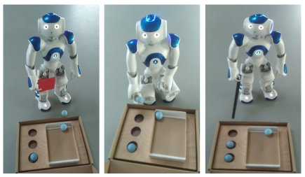

Robot as a Teacher
We are developing a system that enables the robot to autonomously execute Shoebox-tasks using knowledge provided by a vision-based solver.
In the “Robot as a Teacher” use case, the student solves the tasks while the robot supports them by demonstrating solutions or providing guidance through speech, gestures, or visual cues. The level of assistance can be adapted to the individual needs of each student, allowing more independent learners to work with minimal interruption, while others receive more structured support.
The robot can also help maintain motivation during task solving and support social skill development through interaction, turn-taking, and collaborative problem solving. If a physical robot is not available, the same approach can be used in a simulated or remote learning environment.
